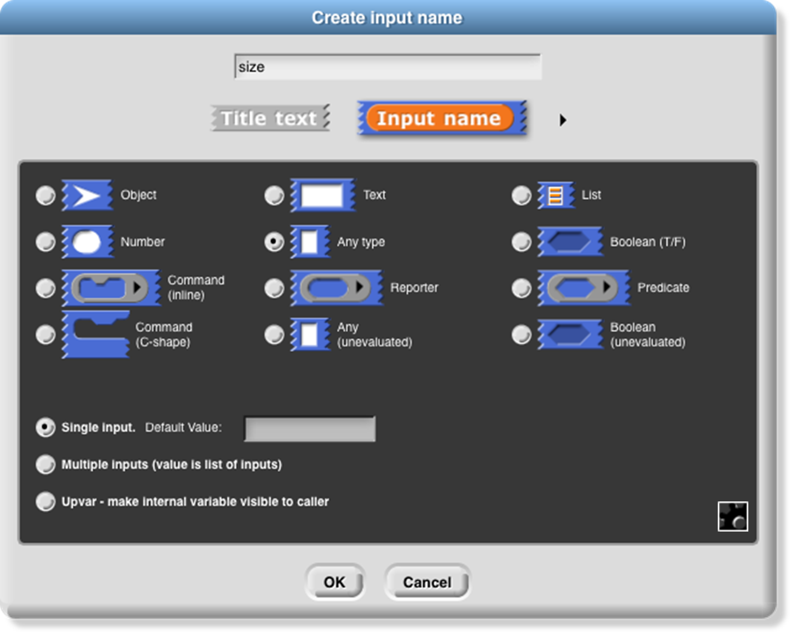
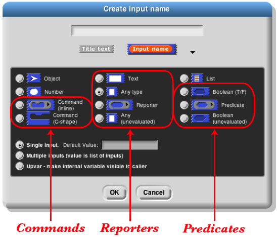

5 Typed Inputs
Scratch’s Type Notation
Prior to version 3, Scratch block inputs came in two types : Text-or-number type and Number type. The former is indicated by a rectangular box, the latter by a rounded box:  . A third Scratch type, Boolean (true/false), can be used in certain Control blocks with hexagonal slots.
. A third Scratch type, Boolean (true/false), can be used in certain Control blocks with hexagonal slots.
The Snap! types are an expanded collection including Procedure, List, and Object types. Note that, with the exception of Procedure types, all of the input type shapes are just reminders to the user of what the block expects; they are not enforced by the language.
The Snap! Input Type Dialog
In the Block Editor input name dialog , there is a right-facing arrowhead after the “Input name” option:

Clicking that arrowhead opens the “long” input name dialog :

There are twelve input type shapes , plus three mutually exclusive modifiers, listed in addition to the basic choice between title text and an input name. The default type, the one you get if you don’t choose anything else, is “Any,” meaning that this input slot is meant to accept any value of any type . If the size input in your block should be an oval-shaped numeric slot rather than a generic rectangle, click “Number.”
The arrangement of the input types is systematic. As the pictures on this and the next page show, each row of types is a category, and parts of each column form a category. Understanding the arrangement will make it a little easier to find the type you want.

The second row of input types contains the ones found in Scratch: Number, Any, and Boolean. (The reason these are in the second row rather than the first will become clear when we look at the column arrangement.) The first row contains the new Snap! types other than procedures: Object, Text, and List. The last two rows are the types related to procedures, discussed more fully below.
The List type is used for first class lists, discussed in Chapter IV above. The red rectangles inside the input slot are meant to resemble the appearance of lists as Snap! displays them on the stage: each element in a red rectangle.
The Object type is for sprites, costumes, sounds, and similar data types.
The Text type is really just a variant form of the Any type, using a shape that suggests a text input.[5]
Procedure Types
Although the procedure types are discussed more fully later, they are the key to understanding the column arrangement in the input types. Like Scratch, Snap! has three block shapes : jigsaw-piece for command blocks, oval for reporters, and hexagonal for predicates. (A predicate is a reporter that always reports true or false.) In Snap! these blocks are first class data; an input to a block can be of Command type, Reporter type, or Predicate type. Each of these types is directly below the type of value that that kind of block reports, except for Commands, which don’t report a value at all. Thus, oval Reporters are related to the Any type, while hexagonal Predicates are related to the Boolean (true or false) type.
The unevaluated procedure types in the fourth row are explained in Section VI.E below. In one handwavy sentence, they combine the meaning of the procedure types with the appearance of the reported value types two rows higher. (Of course, this isn’t quite right for the C-shaped command input type, since commands don’t report values. But you’ll see later that it’s true in spirit.)

Pulldown inputs
Certain primitive blocks have pulldown inputs , either read-only , like the input to the touching block:

(indicated by the input slot being the same (cyan, in this case) color as the body of the block), or writeable , like the input to the point in direction block:

(indicated by the white input slot), which means that the user can type in an arbitrary input instead of using the pulldown menu.

Custom blocks can also have such inputs. To make a pulldown input, open the long form input dialog, choose a text type (Any, Text, or Number) and click the  icon in the bottom right corner, or control/right-click in the dialog. You will see this menu:
icon in the bottom right corner, or control/right-click in the dialog. You will see this menu:
Click the read-only checkbox if you want a read-only pulldown input. Then from the same menu, choose options… to get this dialog box:

Each line in the text box represents one menu item. If the line does not contain any of the characters =~{} then the text is both what’s shown in the menu and the value of the input if that entry is chosen.
If the line contains an equal sign =, then the text to the left of the equal sign is shown in the menu, and the text to the right is what appears in the input slot if that entry is chosen, and is also the value of the input as seen by the procedure.
If the line consists of a tilde ~, then it represents a separator (a horizontal line) in the menu, used to divide long menus into visible categories. There should be nothing else on the line. This separator is not choosable, so there is no input value corresponding to it.
If the line ends with the two characters equal sign and open brace ={, then it represents a submenu. The text before the equal sign is a name for the submenu , and will be displayed in the menu with an arrowhead ► at the end of the line. This line is not clickable, but hovering the mouse over it displays the submenu next to the original menu. A line containing a close brace } ends the submenu; nothing else should be on that line. Submenus may be nested to arbitrary depth.

Alternatively, instead of giving a menu listing as described above, you can put a JavaScript function that returns the desired menu in the textbox. This is an experimental feature and requires that JavaScript be enabled in the Settings menu.
It is also possible to get the special menus used in some primitive blocks, by choosing from the menu submenu: broadcast messages, sprites and stage, costumes, sounds, variables that can be set in this scope, the play note piano keyboard, or the point in direction 360° dial. Finally, you can make the input box accept more than one line of text (that is, text including a newline character) from the special submenu, either “multi-line” for regular text or “code” for monospace-font computer code.
If the input type is something other than text, then clicking the  button will instead show this menu:
button will instead show this menu:

As an example, we want to make this block:  The second input must be a read-only object menu:
The second input must be a read-only object menu:

Input variants
We now turn to the three mutually exclusive options that come below the type array.
The “single input” option: In Scratch, all inputs are in this category. There is one input slot in the block as it appears in its palette. If a single input is of type Any, Number, Text, or Boolean, then you can specify a default value that will be shown in that slot in the palette, like the “10” in the move (10) steps block. In the prototype block at the top of the script in the Block editor, an an input with name “size” and default value 10 looks like this:


The “Multiple inputs” option: The list block introduced earlier accepts any number of inputs to specify the items of the new list. To allow this, Snap! introduces the arrowhead notation (⏴⏵) that expands and contracts the block, adding and removing input slots. (Shift-clicking on an arrowhead adds or removes three input slots at once.) Custom blocks made by the Snap! user have that capability, too. If you choose the “Multiple inputs” button, then arrowheads will appear after the input slot in the block. More or fewer slots (as few as zero) may be used. When the block runs, all of the values in all of the slots for this input name are collected into a list, and the value of the input as seen inside the script is that list of values:
The ellipsis (…) in the orange input slot name box in the prototype indicates a multiple or variadic input .
The third category, “Upvar - make internal variable visible to caller ,” isn’t really an input at all, but rather a sort of output from the block to its user. It appears as an orange variable oval in the block, rather than as an input slot. Here’s an example; the uparrow (↑) in the prototype indicates this kind of internal variable name:

The variable i (in the block on the right above) can be dragged from the for block into the blocks used in its C-shaped command slot. Also, by clicking on the orange i, the user can change the name of the variable as seen in the calling script (although the name hasn’t changed inside the block’s definition). This kind of variable is called an upvar for short, because it is passed upward from the custom block to the script that uses it.
Note about the example: for is a primitive block, but it doesn’t need to be. You’re about to see (next chapter) how it can be written in Snap!. Just give it a different name to avoid confusion, such as my for as above.
Prototype Hints
We have mentioned three notations that can appear in an input slot in the prototype to remind you of what kind of input this is. Here is the complete list of such notations:

- = default value
- … multiple input
- ↑ upvar
- # number
- λ procedure types
- ⫶ list
- ? Boolean
- ¶ multi-line text
 object
object
Title Text and Symbols
Some primitive blocks have symbols as part of the block name:  . Custom blocks can use symbols too. In the Block Editor, click the plus sign in the prototype at the point where you want to insert the symbol. Then click the title text picture below the text box that’s expecting an input slot name. The dialog will then change to look like this:
. Custom blocks can use symbols too. In the Block Editor, click the plus sign in the prototype at the point where you want to insert the symbol. Then click the title text picture below the text box that’s expecting an input slot name. The dialog will then change to look like this:

The important part to notice is the arrowhead that has appeared at the right end of the text box. Click it to see the menu shown here at the left.
Choose one of the symbols. The result will have the symbol you want:  The available symbols are, pretty much, the ones that are used in Snap! icons.
The available symbols are, pretty much, the ones that are used in Snap! icons.
But I’d like the arrow symbol bigger, and yellow, so I edit its name:

This makes the symbol 1.5 times as big as the letters in the block text, using a color with red-green-blue values of 255-255-150 (each between 0 and 255). Here’s the result:

The size and color controls can also be used with text: $foo-8-255-120-0 will make a huge orange “foo.”
Note the last entry in the symbol menu: “new line .” This can be used in a block with many inputs to control where the text continues on another line, instead of letting Snap! choose the line break itself.